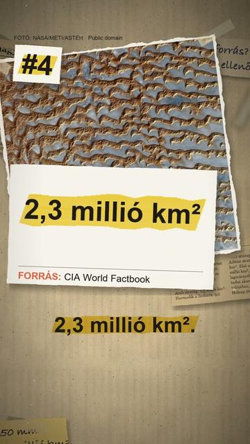

Megnézem a YouTube-onAz 5 legnagyobb sivatag a világon
Röviden: Az öt legnagyobb sivatag, ha a sivatagot a csapadék szerint mérjük: a USGS szerint sivatag az a száraz terület, ahol évente kevesebb mint 250 milliméter csapadék hullik (a 250–500 mm-es félsivatag már sztyepp).
Az öt legnagyobb sivatag, ha a sivatagot a csapadék szerint mérjük: a USGS szerint sivatag az a száraz terület, ahol évente kevesebb mint 250 milliméter csapadék hullik (a 250–500 mm-es félsivatag már sztyepp). Ezzel a mércével a hideg sarkvidékek is sivatagok. A területek a CIA World Factbookból (a kiadványt 2026-ban megszüntették, ezért archivált mentésből): Antarktisz 14 200 000, Arktisz 13 900 000, Szahara 9 200 000, Arab-sivatag 2 330 000, Góbi 1 295 000 négyzetkilométer; a videó egy tizedes millióra kerekít. A Factbook saját listája a sarki sivatagok nélkül készül, azon a Szahara az első: ez a legnagyobb forró sivatag. Más források más számot adnak (a Guinness World Records a Szaharára 9,1 millió négyzetkilométert ad meg), mert a sivatag határa megállapodás kérdése.
Az összes rész forrásokkal: https://valoban.pages.dev/
Források
- CIA World Factbook: World, Geography – note (archivált, 2026. jan.)
- CIA World Factbook: Antarctica, Climate (archivált, 2026. jan.)
- USGS: Deserts: Geology and Resources – What is a desert?
- Guinness World Records: Largest hot desert
4 forrás · Hogyan ellenőrzünk?
Hibát találtál? Írd meg nekünk, megnézzük.
Képek és kreditek
• az Antarktisz a Blue Marble-mozaikon – NASA / Dave Pape, Public domain (https://creativecommons.org/publicdomain/mark/1.0/) https://commons.wikimedia.org/?curid=1247252
• szélbarázdált hó az antarktiszi fennsíkon – Stephen Bannister, CC BY 2.5 (https://creativecommons.org/licenses/by/2.5/) https://commons.wikimedia.org/?curid=31464208
• a Föld keleti féltekéje, alul az Antarktisz – NASA, Reto Stöckli, Public domain (https://creativecommons.org/publicdomain/mark/1.0/) https://commons.wikimedia.org/?curid=24990770
• az Arktisz a Blue Marble-mozaikon – NASA, Public domain (https://creativecommons.org/publicdomain/mark/1.0/) https://commons.wikimedia.org/?curid=197651541
• az Arktisz a VIIRS műhold mozaikján, 2012 – NASA, Public domain (https://creativecommons.org/publicdomain/mark/1.0/) https://commons.wikimedia.org/?curid=52576126
• a Szahara műholdképe – NASA, Public domain (https://creativecommons.org/publicdomain/mark/1.0/) https://commons.wikimedia.org/?curid=1654153
• az Arab-félsziget a MODIS műholdképén, 2019 – NASA GSFC, Public domain (https://creativecommons.org/publicdomain/mark/1.0/) https://commons.wikimedia.org/?curid=145435604
• a Rub’ al-Háli az Arab-sivatagban (ASTER) – NASA/METI/ASTER, Public domain (https://creativecommons.org/publicdomain/mark/1.0/) https://commons.wikimedia.org/?curid=5082896
• tevék a Góbiban, Mongólia – Bernard Gagnon, CC0 (https://creativecommons.org/publicdomain/zero/1.0/) https://commons.wikimedia.org/?curid=146258611
• a Taylor-völgy az Antarktisz száraz völgyeiben – owamux, CC BY 2.0 (https://creativecommons.org/licenses/by/2.0/) https://commons.wikimedia.org/?curid=151558327
• a Szahara Algériában a Nemzetközi Űrállomásról – NASA, Public domain (https://creativecommons.org/publicdomain/mark/1.0/) https://commons.wikimedia.org/?curid=115356890
• teve a Góbiban, Mongólia – Bernard Gagnon, CC0 (https://creativecommons.org/publicdomain/zero/1.0/) https://commons.wikimedia.org/?curid=146258612
A képek módosítva: 9:16-ra kivágva, átméretezve, kameramozgással, ráégetett felirattal.